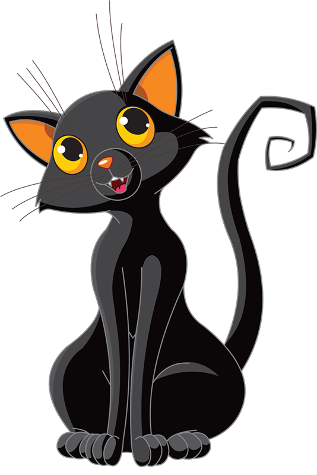
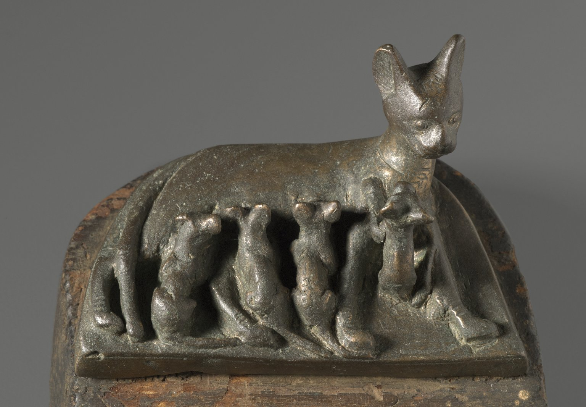
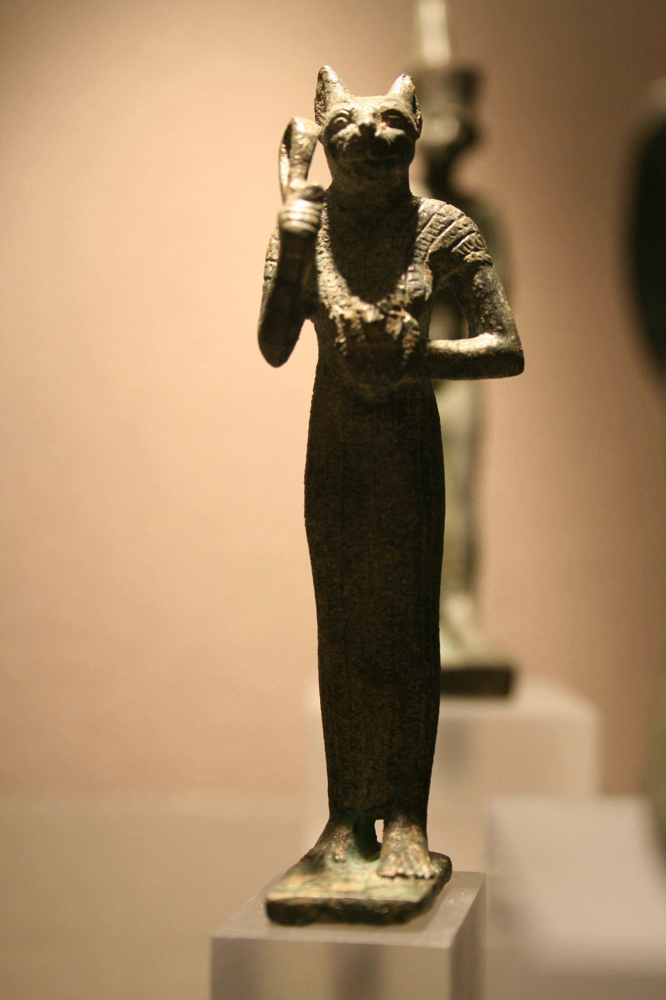
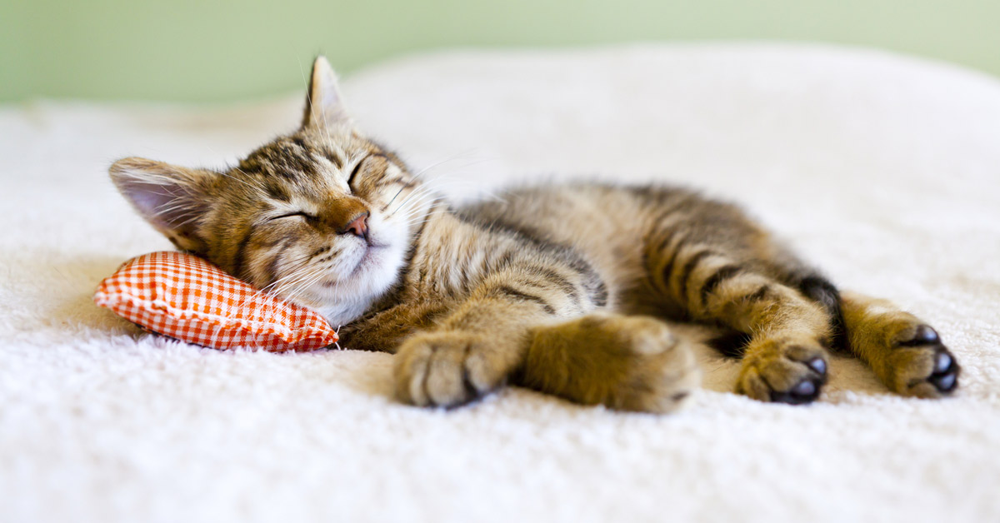

Los GatosY su información basica |
 | ||
Historia del los GatosLa historia del gato se basa sobre todo en la percepción que el hombre tiene del pequeño felino. Se cree que la domesticación del gato comenzó entre el 7500 a. C. y el 7000 a. C. La visión que el hombre tiene del gato difiere totalmente de una época a otra, siendo desde la antigüedad, cuando lo veneraban, hasta la Edad media, cuando los quemaban en las hogueras, pensando que era un animal diabólico. Los gatos actuales comparten un antepasado común que probablemente esté relacionado con los miacis. Estos pequeños carnívoros de los bosques aparecieron hace alrededor de 60 millones de años y tenían la velocidad y la talla de las jinetas actuales, con un cuerpo alargado y una larga cola. Quedan pocos fósiles en el hemisferio norte. El origen de los felinos está mal documentado en el registro fósil ya que los antepasados de los félidos vivían normalmente en zonas tropicales, que no ofrecen buenas condiciones para la fosilización. Las especies desaparecidas consideradas más cercanas al antepasado de los felinos serían el proailurus (pequeño carnívoro europeo y arborícola aparecido hace 40 millones de años) y el pseudaelurus que vivió hace de 8 a 20 millones de años en Europa y en Asia, y de los que se separaron los felinos actuales hace 10,8 millones de años. |
  |
|
|
Ventajas para la SaludReducción del estrés
Acariciar gatos reduce los niveles de cortisol (hormona relacionada con el estrés).
Se cree, también, que el contacto físico con gatos incrementa en humanos la producción de ondas tetha cerebrales, que habitualmente se producen en estados de relajacíon y calma profunda. Efecto terapéutico en personas con autismoEl contacto físico con las mascotas incrementa los niveles de oxitocina, una hormona que está vinculada con el establecimiento de relaciones sociales. Un estudio encontró niveles menores de oxitocina en sangre en niños autistas. Se ha comprobado que el incremento de niveles de oxitocina en autistas disminuye las conductas repetitivas y mejora la habilidad de evaluar el significado emotivo de la entonación al hablar. Por otra parte, otro estudio reveló que los niños con autismo que tenían mascota se sentían más tranquilos y se relacionaban con mayor facilidad. Inspiran emociones positivasUna encuesta realizada a 7000 personas en 2015 indicó que ver vídeos o fotografías de gatos suponía un incremento en las emociones positivas (felicidad, esperanza…) de la persona que los visualizaba, así como un aumento de sus niveles de energía. Ronroneo sanadorTras observar varios felinos domésticos y salvajes, se ha comprobado que el ronroneo se produce a una frecuencia de entre 20 y 140 Hz, siendo lo más habitual una frecuencia de 20-50 Hz en gatos domésticos. Parece ser que esta vibración sonora estimula la curación de tejidos, especialmente en lesiones que afectan a tendones y músculos. Asimismo, reduce el dolor y ayuda a incrementar la densidad ósea. Protegen el corazónConvivir con mascotas se ha asociado con la disminución del estrés, la reducción de la presión sanguínea y, por lo tanto, menor riesgo de enfermedades cardiovasculares. Un estudio realizado en 2009 en el que hubo más de 4000 participantes que habían tenido o tenían actualmente mascota (perros y/o gatos), reveló que las personas que habían convivido con gatos tenían menor riesgo de sufrir infarto de miocardio que los que no vivían con felinos. Curiosamente, la convivencia con perros no demostró estar asociada a una reducción del riesgo a padecer enfermedades cardiovasculares, incluyendo el infarto miocárdico. Mejora la salud mentalUna encuesta realizada en 2011 a 600 personas, de las cuales la mitad padecían en ese momento un problema de salud mental, reveló que el 87% sentía que tener gato tenía un impacto positivo en su vida y el 75% sobrellevaba mejor el día a día gracias a la compañía de su gato. Mejora la salud generalSi actualmente no tienes gato y te estás planteando dejar entrar uno en tu vida has de saber que en un estudio llevado a cabo con casi un centenar de participantes, resultó que durante el primer mes tras la adquisición de una mascota (perro o gato), las personas daban puntuaciones mejores en un cuestionario de salud general comparado con las personas que no tenían mascota. En las personas con mascota hubo una reducción significativa en la incidencia de problemas de salud menores durante este periodo. Así que… ¿a qué estás esperando? |
 | ||
CuriosidadesLos gatos son animales y mascotas muy interesantes que destacan por su inteligencia y el aura de misterio que les envuelve. Cada uno tiene su personalidad, y aunque no sean tan expresivos como los perros, cualquier persona que haya convivido con ellos sabe que son seres especiales. A continuación se presentan 10 curiosidades que seguramente no sabias de los gatos:
|
|||
Razas de GatosExisten muchas razas de gatos en el mundo actualmente, a continuación puedes elegir sobre el que quieras saber mas para dirigirte a su pagina especifica:
|
|||
Referencias |
|||
Volver Arriba |
|||